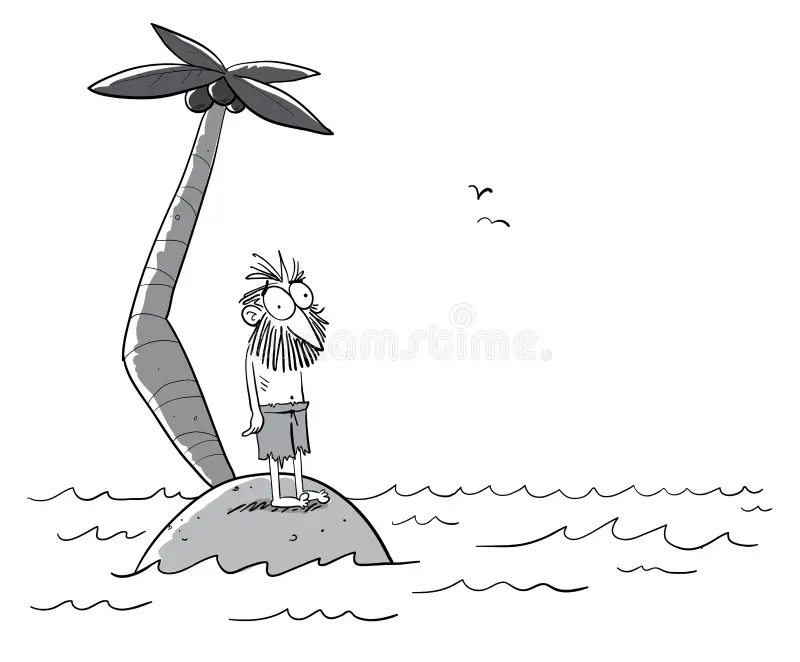

Om Mig
"Småland, familj och framtidstro"
Det är tre ord som sammanfattar mig ganska bra. Mina småländska rötter viskar om det förflutna, men framtidstron sjunger om Skåne, där möjligheterna för mina efterkommande blomstrar fritt i den feta jorden - en längtan större än skogarnas tystnad, en plats för deras osjungna sånger.
Född 1992. Jag uppskattar livets enkelhet; prål, falsk yta och skryt är inte för mig. Min
stora rikedom är att vara far till fyra underbara döttrar och make till en fantastisk fru.
Vid dagens slut är det familjen jag tänker på.
"Sätter du en smålänning på en öde klippa
i havet skaver han sig
mätt,
och giver du honom en get bliver han rik."

Mina intressen och engagemang
Certifierad snickare och utbildad betongarbetare, men långt ifrån bara en slitvarg. Engagerad medborgare, nyfiken på litteratur och med stort intresse för svensk och europeisk historia. Teknikintresset har återvänt på senare tid, inte minst med de nya möjligheter som AI erbjuder.
Lokalsamhället och demokratin är viktiga för mig, dessa kräver ständigt engagemang. Rätten att rösta fritt är en grundläggande princip som jag stöder genom att ställa upp som rösträknare vid val.
Svenska kyrkan är en plats för reflektion och gemenskap för mig och min familj.